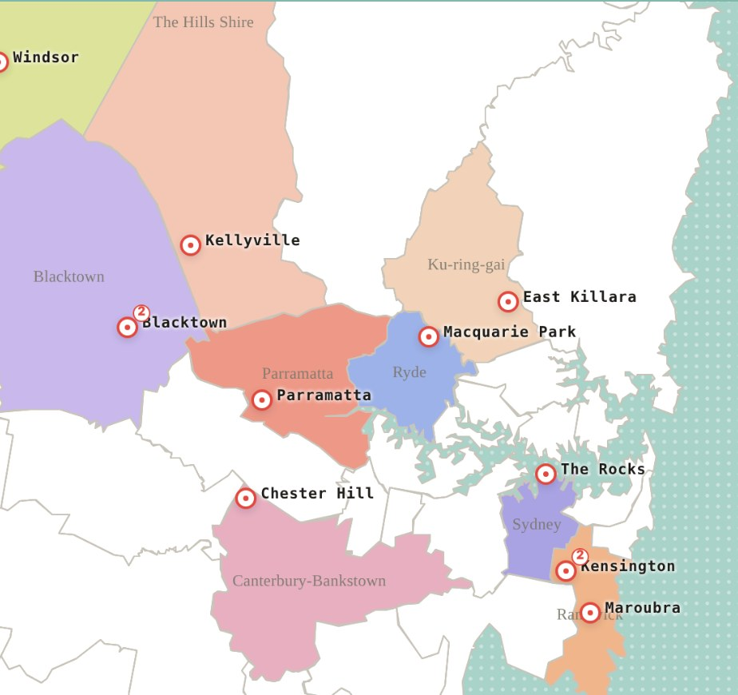

24 Oct 2026
Click around, play with it.
Website update! I added three interactive maps to my Projects page: Sydney, Athens and Colombo. Hover over the map, click the pins and have a play. 👉 Check out the Maps

little corner for sharing...
1 Sep 2026

I graduated with a Master of City Planning from UNSW and started my first job as a Traffic Engineer at Genesis Traffic. Really looking forward to this new chapter.
6 May 2026
I built my very first website! It’s a small corner of the internet where I share my thoughts, my work and whatever I’m excited about. Thanks for stopping by.